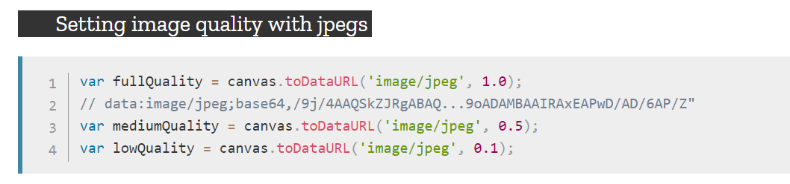

Introduction
html
block
div
p
h1-h6
hr
ul
ol
dl
form
table
iframe
htmlAndBody
blockSemantization
inline
a
span
b
i
del
sup
sub
em
strong
mark
inline-block
img
video
audio
input
select
textarea
button
map
charactor
Emmet
css
grammar
通配选择器
元素选择器
群组选择器
关系选择器
class和id
伪类选择器
属性选择器
属性值选择器
空格分隔属性选择器
属性值前缀选择器
属性值后缀选择器
包含属性选择器
连接符属性选择器
伪元素选择器
::first-letter
::first-line
::before和::after
::placeholder
::selection
font
font-style
font-variant
font-weight
font-size
font-family
font-face
line-height
颜色
text-decoration
text-shadow
border
border-width
border-style
border-color
border-radius
border-image
background
background-position
background-origin
background-repeat
background-attachment
background-clip
background-size
布局
box-sizing
margin
padding
float
letter-spacing
text-align
text-overflow
移动端布局
viewport
rem
响应式布局
media
JavaScript
变量
简单类型
string
number
boolean
undefined
null
复杂类型
Array
Object
强制类型转换
ToString
ToNumber
ToBoolean
显式强制类型转换
隐式强制类型转换
值传递
运算符
语句
if语句
switch语句
循环语句
函数
定时器
Date
String
charAt()
charCodeAt()
concat()
fromCharCode()
indexOf()
lastIndexOf()
replace()
search()
match()
slice()
substr()
内置对象
Math
Dom
增
删
改
查
样式
元素大小
事件
event
事件委托
事件派发
对象
对象的几种模式
继承
改变this的指向
属性类型
数据属性
访问器属性
对象的深度拷贝
避免空判断
正则表达式
JavaScript设计模式
闭包和高阶函数
闭包
高阶函数
单例模式
策略模式
代理模式
迭代器模式
发布-订阅模式
命令模式
组合模式
模板方法模式
享元模式
职责链模式
中介者模式
装饰者模式
状态模式
适配器模式
vue
canvas
canvas基础知识
路径
填充和描边
文本
清除画布
保存和恢复
变换
阴影
合成
渐变
画布导出为图片
将图片导入画布
访问像素值
模式
动画函数
HTML5 API
Published with GitBook
画布导出为图片
将画布导出为图像
canvas.toDataURL(type, encoderOptions)
将画布导出为图像，得到base64格式的字符串。
参数
描述
type
导出的图像类型('image/png'),默认导出的也是png格式图片
encoderOptions
只有导出jpeg或者webp格式图片的(0~1的额外)质量选项，其他类型图片质量默认为0.92
写法

results matching "
"
No results matching "
"